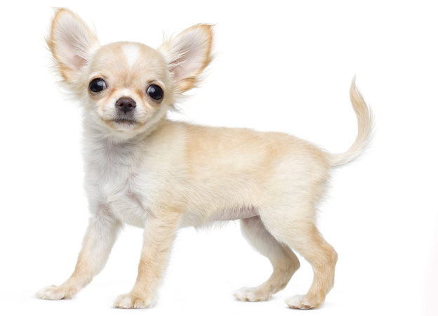

Чихуахуа
История происхождения
Маленькие собаки произошли в Мексике, где в средневековье появились тольтеки – таинственный народ. Индейцы и жрецы этого племени держали питомцев – у них были немые собачки с длинной шерстью. Эти псы были священными для них и участвовали в различных обрядах и праздниках. После смерти хозяина их приносили в жертву, потому что считалось, что пес забирает грехи умершего. Никто из ученых не видел этих собак, а лишь находили их останки. И только в конце 19-го века мексиканцы сумели их отыскать в диких лесах. Собак стали ловить и продавать, это приносило хорошие деньги продавцам. Их скупали и американцы, и мексиканцы. Первая выставка этой породы состоялась в 1884 году в Филадельфии. Тогда официально представили эту крохотную собаку. Вскоре представителя этой породы подарил президент Мексики знаменитой певице Аделине Патти. Аристка получила огромный букет цветов, внутри которого сидела милая собака. После этого случая чихуахуа обрели еще большую популярность. Многие привыкли называть чихуахуа бесполезными собаками, но на самом деле это не так. Благодаря отличному слуху они могут помогать своим глухим хозяевам. Есть в мире чихуахуа по кличке Уиллум. Более десяти лет он служит своему хозяину, лишенному слуха, сообщает ему о телефонных звонках и других важных оповещениях.
Описание породы
У этой мини-породы очень элегантный внешний вид и компактное тело. Череп у собаки небольшой, у основания расширяется, у носа сужается. Носик короткий и аккуратный, смотрит вверх. У чихуахуа красивые и крупные глаза, в основном они темного цвета. Большие стоячие уши закругляются вверху. Спина мускулистая, грудная клетка объемная. Хвост у собаки расположен высоко, он довольно длинный и толстый, кверху закруглен. Передние лапы у псов длинные и прямые, в них нет мышечной массы, они очень тонкие и слабые в отличие от задних лап, те крепкие, с хорошо развитыми суставами. Собаки бывают гладкошерстные и длинношерстные. Окрас встречается самый разный – рыже-красный, светло-рыжий, черный, шоколадный, белый, тигровый и даже сиреневый. Самым необычным считается серебристо-серый цвет с синеватым отливом. Он встречается очень редко, и таких представителей не прививают, потому что это может привести к серьезным заболеваниям.
Характер
Характер у этой породы непростой. На этом, по словам специалистов, сказывается их мексиканское прошлое, когда они бегали по джунглям и выживали в диких условиях. Чихуахуа может очень серьезно разлаяться, утихомирить в такие моменты ее очень сложно. Собака с подозрением относится к незнакомым людям и не любит беспокойных детей, тем более последние могут причинить собакам боль. С другими животными ей тоже будет трудно ужиться из-за того, что пес всегда хочет быть в центре внимания и не терпит конкуренцию. Со своим хозяином крошка энергичная и ласковая. Он прекрасно чувствует настроение своего человека. Он не будет вертеться под ногами и мешать вам, если вы заняты. Он уляжется в паре метров от вас и будет наблюдать за вами.
Уход и содержание
Чихуахуа должны жить в доме, много места они не занимают. У собаки должно быть свое место для сна, приема пищи. Собаки очень мерзнут, важно беречь их от сквозняков и холода. Из-за быстрого обмена веществ, они начинают дрожать, а потом простужаются. В холодную погоду с ними гулять не стоит, либо одевать в теплую курточку для собак. Также ветеринары рекомендуют отказаться от ошейника. У них очень тонкая шея, которую легко повредить, и поэтому лучше купить специальный поводок для миниатюрных собак . Он крепится за туловище под лапки. Необходимо приучить собаку ходить в одно и то же место в туалет. - Можно использовать специальные собачьи пеленки, они хорошо впитывают, и хватает их надолго. Также чихуахуа прекрасно ходят в кошачий лоток без наполнения. Что бы вы ни выбрали, алгоритм приручения будет одинаковым. Сначала нужно постелить газетку прямо около места щенка. Когда он сходит на нее, нужно радоваться и громко похвалить щенка. И так каждый раз. После того, как он сходит в туалет, нужно поиграть с ним. Нельзя кричать на собаку, когда она «сходила мимо». Сделайте замечание только интонацией, они прекрасно поймут, - комментирует Марина Кочина, владелец питомника Бест Чихуа, председатель кинологического клуба Бест. Собакам нужно раз в две недели подстригать когти, поскольку они доставляют неудобства при ходьбе и прыжках. Необходимо по мере загрязнения чистить уши специальным лосьоном. К кормлению нужно подойти очень ответственно. Малыш с тонкой шеей может подавиться даже самой маленькой рыбной косточкой. - Этих собак желательно кормить сухим кормом супер-премиум или премиум класса, в нем содержатся все витамины и минералы. Важно выбрать корм, в котором не содержатся крупы. Не давайте малюткам сладкое, мучное, острое, это негативно сказывается на их здоровье. Также чихуахуа имеют склонность к ожирению, их вес не должен превышать трех килограммов, - говорит заводчица.